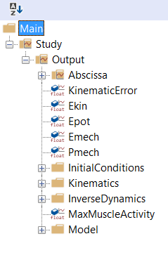
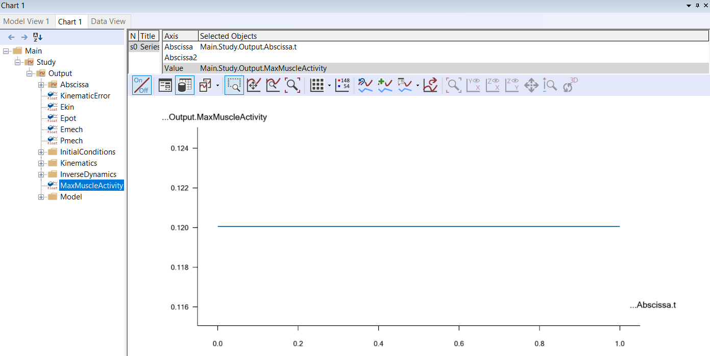
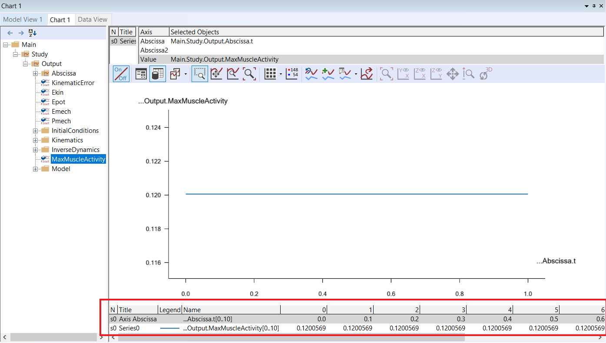
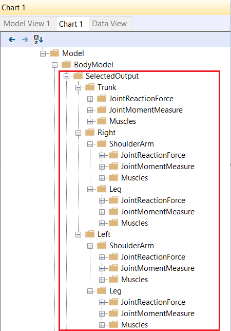
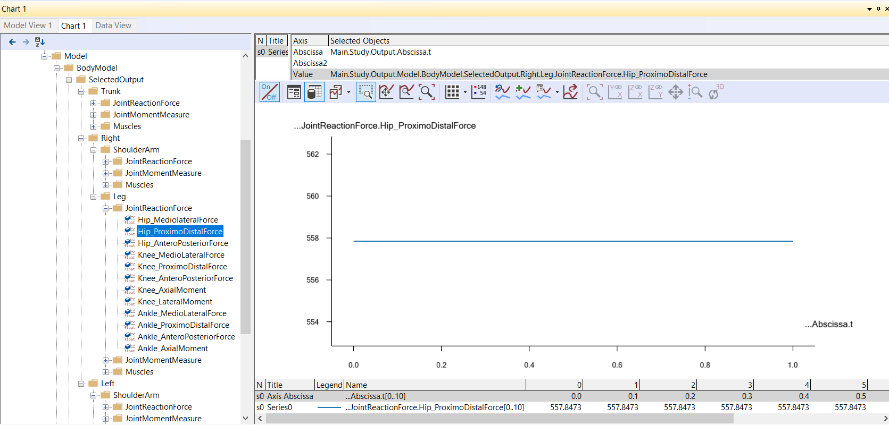
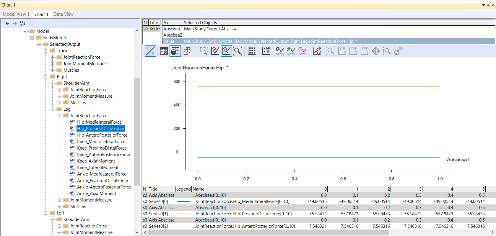
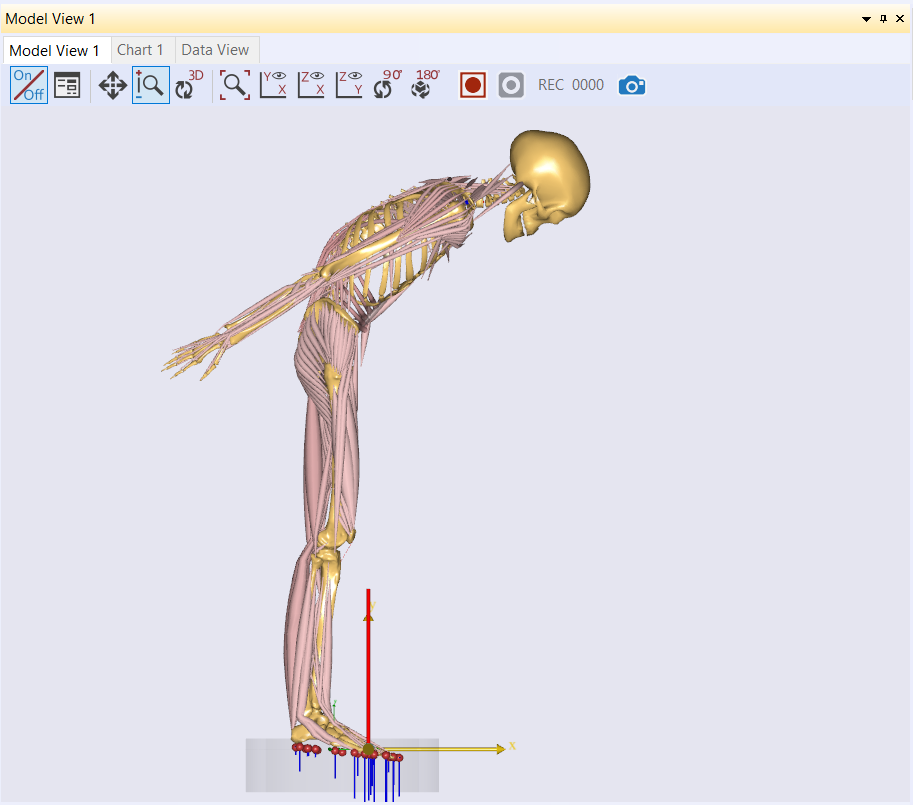
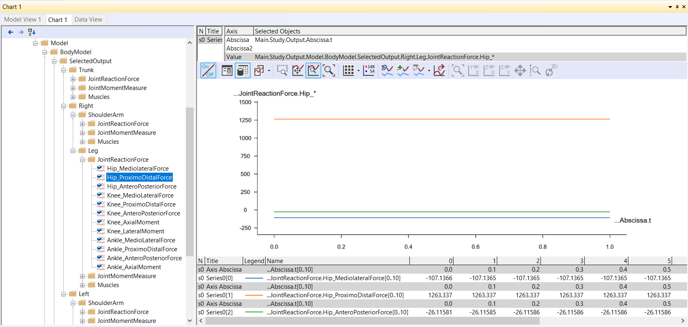

Lesson 3: Reviewing Analysis Results#
Introducing chart view#
You can plot simulation results as graphs by using the Chart View, which can be opened by clicking the “Chart 1” tab in the Model View window. To open Chart views manually go to View -> Charts.
Not all variables in your model tree are necessarily simulation outputs. The chart view therefore presents a filtered down version of the model tree, which only contains simulation outputs that can be plotted.
One of the first nodes you encounter in this tree is the MaxMuscleActivity variable:
Selecting MaxMuscleActivity plots this variable vs time. The plot is a flat line due to the static posture of the model.

If you want to see details of the actual values being plotted, click this
button  . It adds a table with values below the chart:
. It adds a table with values below the chart:

This chart shows you that when standing upright, the most active muscle in model is using about 12% of that particular muscle’s maximum strength.
Hip forces – Standing posture#
Many biomechanical researchers want to see joint reactions forces, joint moments (generated by muscles) and muscle activations. For your convenience, the so-called SelectedOutput folder contains all those representative values. You will find the folder in the tree here:

Navigate to the “Right.Leg.JointReactionForce” folder by expanding the tree view like this:

If you select the ‘Hip_ProximoDistalForce’, you will see its value vs time in the Chart View.

From this chart, we can see that there is about 558N force at the right hip joint in the proximodistal direction.
It is possible to select and plot several outputs simultaneously
by using the asterisk character (*). If you double-click
the “Value” property towards the top of your Chart View, it becomes editable. Let us
edit the last “Hip_ProximoDistalForce” term to “Hip_*”. This
plots all variables in the “JointReactionForce” folder that beging with “Hip_”.

Now you will see the ‘Hip_MediolateralForce’, ‘Hip_ProximoDistalForce’ and ‘Hip_AnteroPosteriorForce’ in the same Chart View.
Hip forces - Bent posture#
The final step of this chapter is to change the posture of the human model to see what happens to the hip joint reaction force.
To adjust the posture of the human model, open your Mannequin.any file and change the PelvisThoraxExtension value from 0 to -60.
Mannequin = {
Posture = {
...
PelvisThoraxExtension=-60;
PelvisThoraxLateralBending=0;
PelvisThoraxRotation=0;
...
Press the F7 button to reload the model and run the “RunApplication” operation again. This will show the modified posture of the human model in the Model View.

Next, we will check the changes in the right hip joint reaction forces.

In the above Chart View, the largest hip joint reaction force component is the “ProximoDistalForce” at about 1263N. So compared to the normal standing posture model, the value has more than doubled. The forces of the “Mediolateral” and “AnteroPosterior” directions have also increased.
Congratulations! You have just completed your first biomechanical analysis with the AnyBody Modeling System. Try changing the posture in the “Mannequin.any” file and investigate the new results.
You may also want to check our library of previous webcasts for topics of particular interest to you.